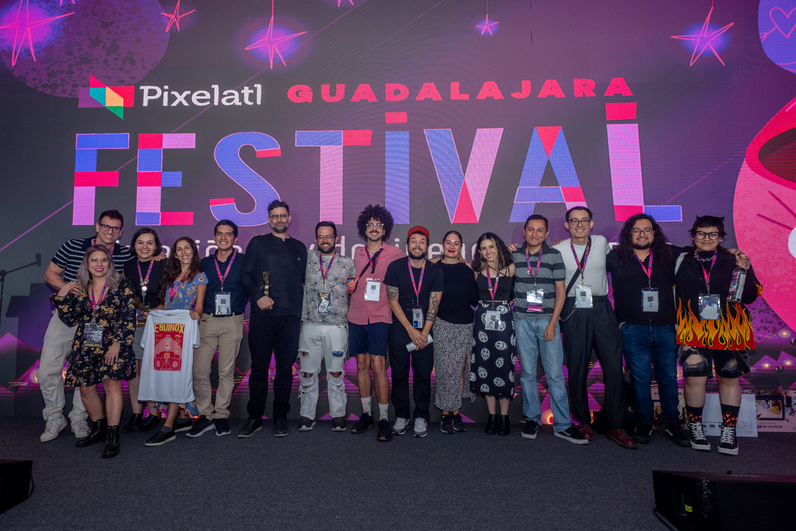
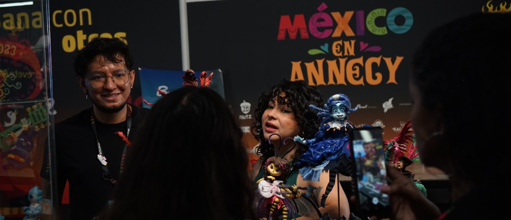

Pixelatl: El Festival
¿Quiénes son?
Pixelatl es una asociación mexicana fundada en 2011, que se dedica a promover la creación y difusión de narrativas gráficas y audiovisuales, para ampliar la oferta latinoamericana y extender sus públicos dentro y fuera de nuestra región.
Hospedan “El Festival Pixelatl”, donde crean espacios de vinculación entre creadores latinoamericanos y las industrias globales de la animación, el cómic y los videojuegos. Convoca durante cinco días a creadores, ejecutivos, y aficionados de todas las áreas del quehacer audiovisual, para fomentar el intercambio de conocimientos y experiencias, promover los proyectos emergentes, construir una red de colaboración internacional, crear nuevos públicos y fomentar un espíritu de comunidad."
Además del Festival, Pixelatl gestiona varias estrategias, entre las que destaca Ideatoon para el desarrollo de propiedades intelectuales animadas, SecuenciArte para promover a los autores de cómics emergentes, Shortway en colaboración con el Festival de Annecy para impulsar proyectos de corto animado, y la Cumbre Pixelatl, un Mercado de servicios creativos y Parlamento de la industria para discutir estrategias comunes. También desarrolló y gestionó de 2020 a 2023 para Ciudad Creativa Digital de Guadalajara el programa CCD Conecta para el reclutamiento y el empleo y realiza en diversos Estados de la República Mexicana talleres para desarrollar proyectos.
México aún no es muy reconocido internacionalmente por su potencial en el mercado de audiovisuales y es esperado que mexicanos o latinoamericanos solo son dotados de sus talentos en el extranjero y no de aquí. No obstante, se está dando un auge de interés en la animación en latinoamérica; un ejemplo es el logro de Villanos fuera producida por Cartoon Network, serie creada por Alan Ituriel.
Para el proyecto en particular es reforzar el arte digital y la diversificación de la cultura mediante la creación de personajes e historias relacionadas con la ficción y mitología mexicana; al igual que al participar en Pixelatl, ayuda financiar demás proyectos sean reconocidos y en sí, apoyar el desarrollo de nuevos reclutas dentro de la industria de animación nacional.